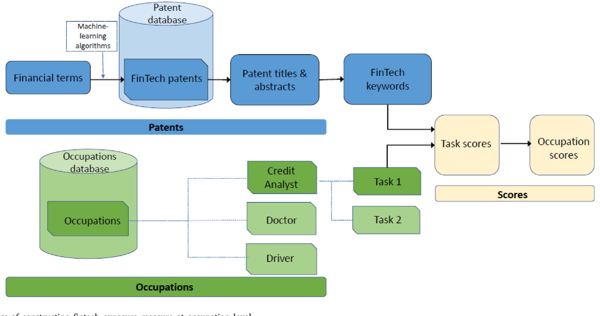
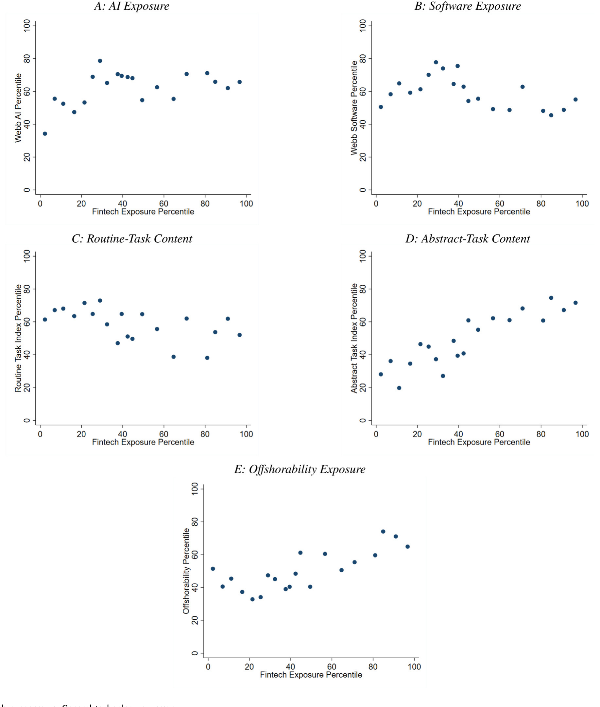
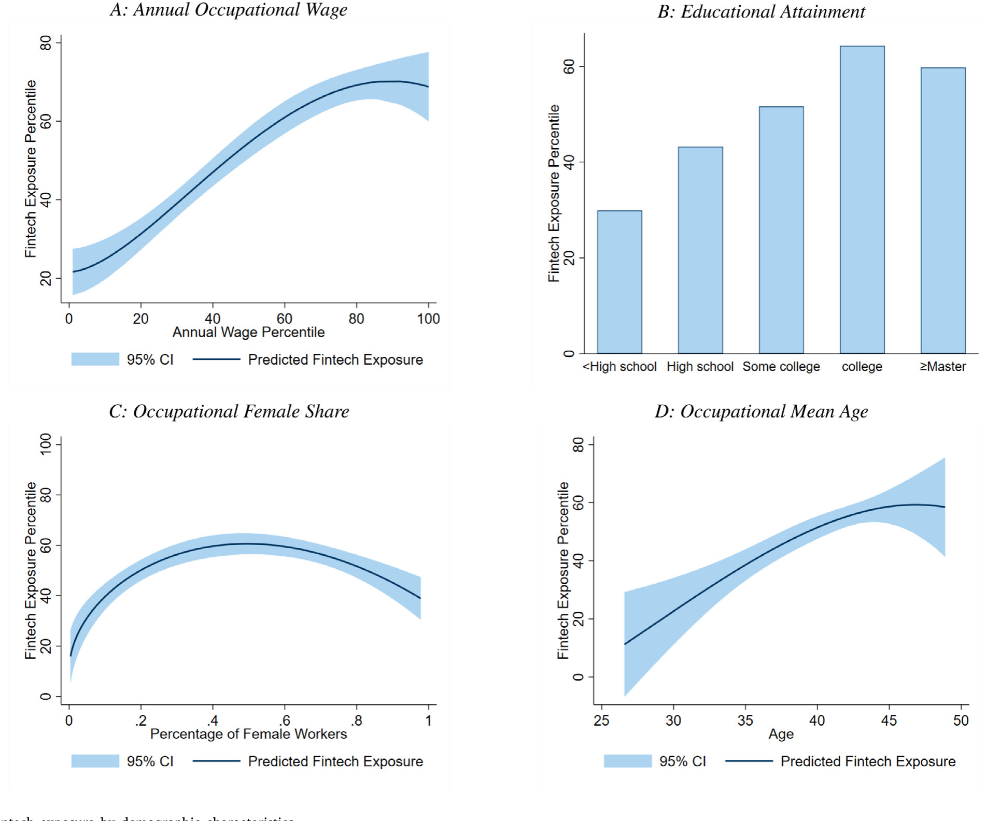
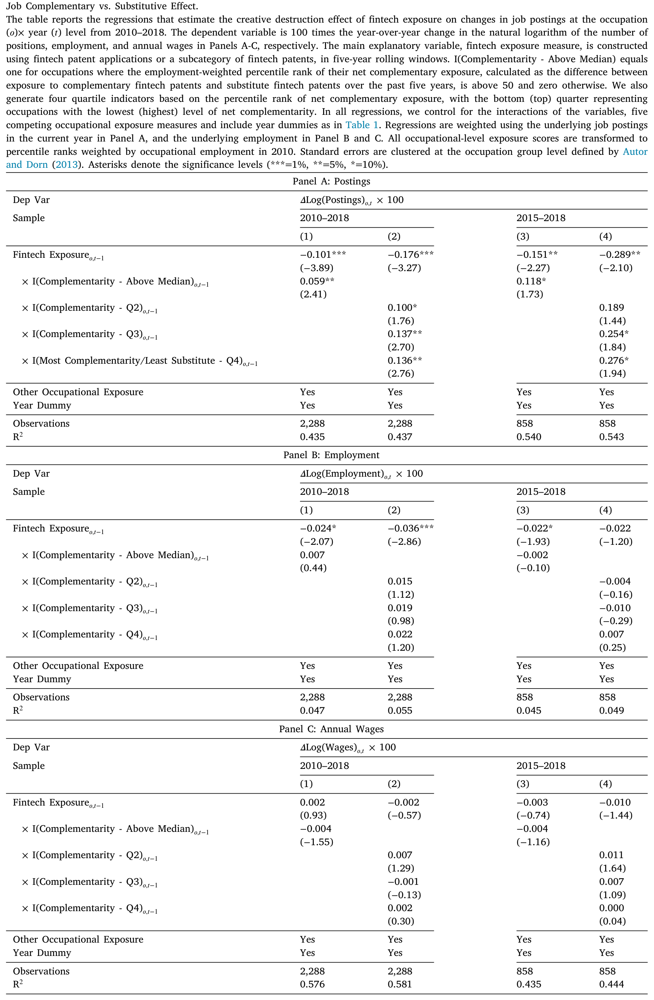
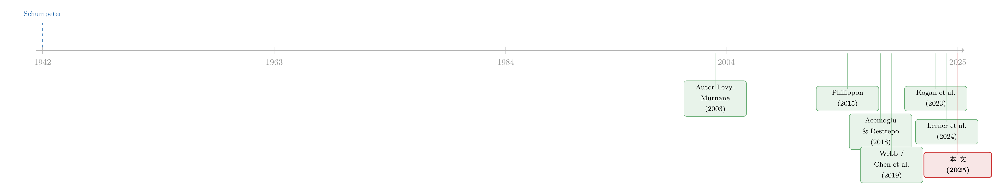

金融科技来了，谁活下来了？——一把量出「岗位被冲击程度」的尺子
本文读的是 Jiang, Tang, Xiao & Yao (2025, Journal of Financial Economics)：作者把「职业任务」的文本和「金融科技专利」的文本逐一比对，造出一把衡量每个职业「暴露在金融科技冲击下有多深」的尺子，然后用它去看招聘、就业、工资和企业表现。结论是一个漂亮的反转——在职业和个人层面，金融科技确实净减岗位、压低工资；可在企业层面，那些主动升级技能、内部调岗、把创新转向新领域的公司不仅扛住了冲击，真正自己发明专利的「创新者」甚至越冲击越增长。能「活下来」的，是企业，不一定是工人。
1 引言：一个被讲了八十年的老故事
关于技术与就业的争论，至少可以追溯到熊彼特 (Schumpeter, 1942) 提出的「创造性毁灭」(creative destruction)：新技术一边创造新机会，一边摧毁旧饭碗。从蒸汽机到流水线，从工业机器人到人工智能，每一波技术浪潮来临，人们都会重新问一遍那个老问题——机器会不会抢走我的工作？
而这一次，浪潮打在了一个很特别的岸上。
有意思的地方在于：自 1886 年以来，无数次技术革命冲击了形形色色的行业，唯独金融业几乎毫发无伤地挺了过来 (Philippon, 2015)。直到最近这一波金融科技 (fintech)——以分布式记账带来的「去中心化」、以众筹带来的「去中介化」为标志——才第一次把矛头直接对准了金融服务的提供者本身。这就给研究者提供了一个近乎理想的实验场：一个长期「免疫」的行业，第一次正面承受技术的冲击，我们可以看着「创造性毁灭」从零开始上演。
但要研究它，先得迈过一道坎。
2 真正关键的一步：怎么「量」出一个职业的金融科技暴露？
研究技术冲击，最头疼的从来不是没有故事，而是没有事前的、微观层面的暴露度量。你怎么知道「会计」这个职业比「卡车司机」更容易被金融科技冲击？凭直觉吗？
作者的解法，是这篇论文真正的「发动机」。思路其实朴素得近乎优雅：把两堆文本摆在一起比一比。
一堆文本，来自 O*NET 数据库——美国劳工部维护的职业信息网络，它把每个 8 位 SOC 代码的职业拆解成一条条具体的「任务」(task)。比如「会计」(SOC 13-2011.00) 的任务包括「复核账目、调节差异」「建立科目表并把分录归入正确科目」等等，平均每个职业有约 20 条任务，每条还带一个反映重要性、相关度、频率的权重。
另一堆文本，来自金融科技专利。作者借用了 Chen et al. (2019) 用机器学习从 USPTO 全量专利里筛出来的金融科技专利清单，再用 Lerner et al. (2024) 的清单做补充，最终得到 6,526 项金融科技专利，分成七类：网络安全、移动支付、数据分析、区块链、P2P、智能投顾、物联网。每项专利的标题和摘要，就是它「在做什么」的文本描述。
接着，一个自然的问题是：怎么把这两堆文本接起来？作者计算二者文本的相似度，再乘上金融科技创新的强度（近年专利申请的数量）——一个职业的任务越是和大量金融科技专利「说同一种语言」，它的暴露度就越高。这样得到的暴露度，既能加总到企业层面，也能加总到行业层面。整个构造流程见下图。

Figure 1: Process of constructing fintech exposure measure at occupation level
这套「任务文本 × 专利文本」的做法，和 Webb (2019)、Kogan et al. (2023) 用职业任务去对接「通用技术」专利的思路一脉相承。区别在于：前人量的是 AI、软件、机器人这类通用技术，而本文第一次把镜头对准了专门冲击金融业的那一类专利。
那么，这把新尺子量出来的东西，会不会只是「通用技术暴露」换了个名字？
作者专门做了验证：金融科技暴露与几个广为人知的通用技术暴露——AI、软件、可离岸性 (offshorability)、常规 vs. 抽象任务含量 (Autor et al., 2003; Firpo et al., 2011; Autor and Dorn, 2013; Webb, 2019)——之间相关性很低。更精确地说，通用技术暴露只能解释金融科技暴露总效应的约 29%；剩下七成是金融科技独有的冲击。换句话说，这确实是一波新的浪。

Figure 4: Fintech exposure vs. General technology exposure
还有一个反直觉的发现藏在人口统计特征里。以往研究自动化、AI 的文献通常发现：受冲击最深的是低薪、低技能的岗位。可金融科技不一样——它呈现出非单调的关系：受冲击最重的，反而是那些中等薪资、中等学历、中年的职业。技术这一次，瞄准的是「夹心层」。

Figure 5: Fintech exposure by demographic characteristics
3 第一个落点：职业层面，岗位真的在减少
有了尺子，剩下的就是把它对准劳动力市场。
数据主力是 Burning Glass（简称 BG）——一个覆盖了 2010–2018 年美国超过 1.74 亿条招聘信息的专有数据库，抓取自四万多个招聘网站和企业官网，约占全美线上线下岗位的 60%–70%。招聘信息（job postings）反映的是企业想招人的意愿，是「人才需求」最贴近的代理变量。
作者在职业-年度层面做基准回归，控制住其他职业暴露之后，结论清清楚楚：金融科技暴露每上升一个百分位，该职业的年度招聘量下降约 7.1 个基点（bps）。这个数字小，但乘起来就吓人——如果一个职业的暴露从第 20 百分位移动到第 80 百分位，对应的招聘损失是平均每个「职业-年度」组里 1,642 个岗位。把暴露最高那四分之一的职业加总，2010 到 2018 年间累计损失约 483,600 个招聘岗位。
招聘是「流量」，那「存量」呢？作者拿 OEWS（职业就业与工资统计）的就业和工资数据做交叉验证：负向关系依然显著，但就业的弹性大约只有招聘的三分之一；而对工资的压低，要到 2014 年金融科技加速之后才显著——2015–2018 年间，暴露每上升一个百分位，平均工资下降约 2.1 个基点。这种「就业比招聘黏、工资向下刚性」的滞后模式，恰恰和劳动经济学的经典认识吻合。
但如果故事到这里就结束，那它只是又一篇「技术减岗」的论文。真正关键的一步，在于作者没有停在「净减少」这个平均数上。
4 反转：毁灭的另一面，是创造
净效应为负，不代表内部没有结构。作者把金融科技专利沿着一条谱系排开——从最可能替代 (substitute) 某个职业的，到最可能增强 (complement) 它的——这一步还动用了 ChatGPT 来读职业任务和专利文本、做替代/互补的判断。
结果呈现出一条漂亮的单调曲线：在互补性最低（即替代性最高）的那四分之一专利里，暴露每上升一个百分位，招聘下降高达 17.6 个基点；而随着互补性档位逐级上升，这个负系数单调地收缩，到互补性最高的那一档，系数趋近于零、不再显著。技术对劳动者，从来不是非黑即白。

Table 3
接着，作者转向「创造性毁灭」里那个常被忽视的「创造」部分。他们比对不同年份的 O*NET 职业分类报告，识别出在 8 位 SOC 层面新出现的子职业，发现它和金融科技暴露正相关：把暴露从第 20 移到第 80 百分位，子职业被创造出来的概率上升 7.14%（即 0.119% × 60，相对于 7.1% 的无条件概率）。新职业大致分两类——一类为金融科技提供技术支撑，一类把金融科技用于完成自己的任务。七个类别里，区块链带来的新职业最多，其次是网络安全和 P2P。
更微妙的是，即便是老岗位，也在被「升级」。金融科技暴露越高，招聘里对工作经验和学历的要求就越高；尤其是技能组合——如果暴露从第 20 移到第 80 百分位，雇主要求「金融 + 技术」(finance + tech) 复合技能的概率上升 13.6%（1% 水平显著，相对于 72% 的无条件概率）。金融科技模糊了金融与科技的传统行业边界，逼着劳动力市场长出一批「两栖人才」。
到这里，谜底的轮廓已经浮现：冲击是真的，但冲击之下，有人沉、有人浮。那么，能浮起来的，到底是谁？
5 核心落点：能「活下来」的是企业，不一定是工人
论文的最后一块，也是它最有分量的一块，转到了企业-职业-年度层面。
在企业层面，金融科技暴露与招聘的负相关依旧存在，但明显减弱。这立刻引出一个问题：企业是怎么把冲击「中和」掉的？
第一条裂缝，出现在「在位者」(incumbent) 和「新进入者」之间。作者把金融业里上市年限高于中位数的公司定义为「在位者」，把年轻公司和科技公司视为「挑战者」。结果是：那条负向关系，几乎全部由「在位者」贡献；年轻的金融公司和科技公司，则适应得很好。老钱在流血，新血在生长。
第二条线索，藏在 LinkedIn 数据里（来自 RevelioLab）。招聘数据看不见一种重要的人才再配置方式——企业内部调岗：同一个员工换了岗位，却没换东家。作者发现，内部调岗与金融科技暴露显著正相关，而且在「金融 + 技术」复合技能的员工身上更强。也就是说，拥有对路技能的人，能在不离职的情况下转去一个受益于金融科技、或暴露更低的岗位；而企业能做到这种内部腾挪，本身就标志着它「重新部署人才」的能力。即便真的发生了离职，被分流的员工也更可能流向暴露更低、或与金融科技互补的职业。
最后是那个最有力的反转。作者考察企业表现，发现真正的赢家是那些自己发明、自己申请专利的「创新者」，而非仅仅去市场上收购专利的公司。前者随着金融科技暴露上升，就业、销售、生产率全都在增长。
这就是全文的核心：金融科技的「创造性毁灭」，在不同主体身上是不对称的。
别误读成「技术是好事，皆大欢喜」。论文的判断恰恰相反——能从冲击里幸存乃至获益的是企业（尤其是真创新的企业），而个人工人承担了更高的个体失业风险。所谓「surviving the fintech disruption」，主语是公司，不是普通打工人。「企业能比工人更好地吸收冲击」这句话，本身就是一种分配警示。
6 文献脉络
把这篇论文放回它的家族里，脉络其实很清楚。
最上游，是熊彼特 (Schumpeter, 1942) 的「创造性毁灭」——一个被反复引用、却很难被实证「钉住」的概念。接着是劳动经济学那条主线：Autor, Levy & Murnane (2003) 用「任务」(task) 框架重写了技术与技能的关系，奠定了后来一切「职业任务暴露」研究的方法论基础。

然后，技术冲击的实证沿着不同的「技术」分叉展开：Acemoglu & Restrepo (2018)、Graetz & Michaels (2018)、Benmelech & Zator (2022) 研究工业机器人（关于机器人冲击是否被高估，可参见《机器人去哪儿了？》）；Acemoglu et al. (2022)、Babina et al. (2024) 研究人工智能。这些研究有一个共同的痛点——缺一把事前的、微观的暴露尺子。
正是在这一点上，Webb (2019) 和 Kogan et al. (2023) 给出了关键工具：用职业任务文本去对接专利文本，量化职业对通用技术的暴露。本文站在他们的肩膀上，把对象换成了专门冲击金融业的金融科技专利——而能这么做，又依赖 Chen et al. (2019) 用机器学习识别金融科技专利、以及 Lerner et al. (2024) 整理金融创新专利的前期工作。
此外，本文也接上了「劳动与金融」(labor and finance) 这条支流——从资本结构如何受劳动因素影响 (Matsa, 2010; Serfling, 2016)，到并购、技术变革与不平等 (Ma et al., 2022；可参见《并购不只是换老板》)。本文的独特之处，是把视角从「工人」挪到了「企业」，问的是企业如何主动调整招聘与创新策略来回应冲击。
7 评论与延伸（Q&A + 研究方向）
(a) 几个可能的疑问
Q：这把「金融科技暴露」尺子，会不会只是「通用技术暴露」的马甲？
作者正面回应了。它与 AI、软件、可离岸性、常规任务含量等通用暴露相关性都很低；定量上，通用技术只能解释总效应的约 29%，剩下七成是金融科技独有。结论是这确实是一波新的、可分离的冲击。
Q：招聘量下降，等不等于「岗位真的消失」？BG 数据靠谱吗？
招聘是「需求流量」，未必等于就业「存量」的变化。作者用 OEWS 就业/工资交叉验证：方向一致，但就业弹性只有招聘的约三分之一，工资还要到 2014 年后才显著。这种衰减恰恰符合「就业黏、工资刚性」的常识，反而增强了可信度。BG 本身覆盖全美约 60%–70% 的岗位，且与官方空缺统计、J2J 新增雇佣数据高度相关（log 增长相关系数 0.84）。
Q：识别上最大的隐忧是什么？这是因果吗？
这是相关性证据，不是干净的准实验。暴露度由文本相似度构造，本质是横截面 + 时间的面板回归加控制变量，并没有一个外生的「金融科技冲击」断点或工具变量。担忧在于：高暴露职业可能本就处在某种衰退趋势上，金融科技只是「碰巧」与之相关。作者靠控制其他技术暴露、靠互补/替代谱系的单调性来侧面支持机制，但严格的外生性是缺位的。
Q：用 ChatGPT 去判断专利对职业是「替代」还是「互补」，可信吗？
这是个新颖但需谨慎对待的做法。它的说服力不在于「LLM 一定判断对」，而在于结果呈现出单调的剂量-反应关系：替代性越强系数越负，互补性越强系数趋零。这种结构化的规律很难被随机的判断噪声造出来，所以作为佐证是有力的；但若把它当成精确的因果度量，则还嫌粗糙。
Q：为什么受冲击最重的是「中等薪资、中年」人群，而不是低技能者？
这正是金融科技区别于自动化的地方。自动化替代的是体力/常规低技能任务；而金融科技替代的是中等技能的金融中介性工作——核保、对账、放贷审批这类「夹心层」白领任务。所以它的人口画像是非单调的，冲击落在中间。
Q：「企业能幸存」是好消息还是坏消息？
取决于你站在谁的角度。对企业和股东是好消息——尤其真创新企业还能增长。但论文反复强调：企业之所以能吸收冲击，部分正是通过把个体工人推向更高的失业风险（内部调岗保住的是「对路技能」的人）。从分配角度看，这是一个赢家与输家分化的故事。
(b) 几个可能的研究问题与提案
1. 金融科技冲击与公司债信用利差
【经济故事】如果「在位」金融机构在金融科技冲击下流血、而创新者增长，那么这种分化应当被信用市场定价：高暴露、低创新的在位银行/金融公司，其债券利差是否扩大？这把劳动力市场的暴露尺子接到了信用风险上。
【可行性】中。把本文的企业级金融科技暴露与 TRACE 公司债数据、Compustat 财务匹配即可，识别上可用「暴露 × 创新者虚拟变量」做横截面。难点在于把「劳动暴露」从其他同期冲击中干净剥离，外生性偏弱。
2. 外资持有人是否更早撤离「被金融科技冲击」的金融机构？
【经济故事】外国机构投资者通常被认为信息处理能力强、对结构性冲击反应快。面对金融科技对在位金融机构的侵蚀，外资是否比本土投资者更早调整持仓？这能检验「谁更早看懂创造性毁灭」。
【可行性】中。需要 FactSet/13F 加上各国持有人国别数据，与企业级金融科技暴露匹配。识别上可看暴露冲击前后外资持股变化的差分。挑战在于持仓变化的驱动因素众多，需要细致的控制。
3. 金融科技暴露与企业流动性管理
【经济故事】面对一个会重塑业务模式的技术冲击，企业可能预防性地囤积现金（为转型、招聘复合人才、研发留弹药）。高金融科技暴露的在位金融机构，现金持有和信贷额度使用是否系统性变化？
【可行性】高。本文的企业暴露度量 + Compustat 现金/信贷数据即可直接做面板回归，是相对 doable 的延伸。
4. 把这把尺子搬到其他国家/语言
【经济故事】美国金融业「长期免疫、近年首遭冲击」的设定很特殊。在金融体系结构不同（如银行主导的欧陆、或监管更严的市场）的经济体，金融科技的「创造性毁灭」是否呈现不同的就业-工资模式？
【可行性】低到中。
O*NET是美国体系，海外缺同等粒度的职业任务文本和招聘大数据；需要找到本地等价数据源（如 LinkedIn/Revelio 的跨国覆盖），工程量大。
5. 个人层面的长期收入轨迹
【经济故事】本文落点在企业「幸存」，但被分流的工人后来怎么样了？那些拥有「金融 + 技术」复合技能、靠内部调岗留下来的人，与被迫离职的人，五到十年后的收入差距有多大？这能把分配警示量化。
【可行性】中。需要 LinkedIn/Revelio 的个人面板追踪职业轨迹与（推断的）薪资，本文已用到该数据；难点是收入多为推断值、且个体选择性强。
8 我的判断与参考文献
这篇论文最扎实的贡献，是那把尺子本身。把「职业任务文本 × 金融科技专利文本」拼成一个事前、微观、可加总的暴露度量，让原本只能讲故事的「创造性毁灭」第一次在金融业里被量化、被分解成替代/互补/创造三股力，这是方法论上的真贡献，后续大量研究都能拿它当原材料。它最漂亮的发现，是那个主体间的不对称——同一场冲击，工人受损、在位者流血、真创新者获益——把一个含糊的宏大叙事，拆成了可检验的横截面差异。
我的主要担忧仍在识别。全文本质是面板相关性加控制变量，没有一个外生的金融科技冲击断点或工具变量；高暴露职业本就可能处在某种结构性衰退中，金融科技与它「同向」而未必是「致因」。互补/替代谱系的单调性、以及对通用技术暴露的剥离，是聪明的旁证，但不能替代一次干净的因果设计。其次，用 LLM 判定替代/互补、以及 LinkedIn 推断的薪资与轨迹，都引入了难以量化的测量误差。
后续我最想看到的，是把这把尺子接到信用市场和外资持有人上——如果在位金融机构真的在被侵蚀，那么债券利差、外资持仓、现金管理理应先一步反应；而能否找到一个真正外生的金融科技冲击（比如某项关键专利的突然公开、或某类监管放开），将决定这条研究线能否从「相关」走向「因果」。
参考文献
- Acemoglu, D., Autor, D., Hazell, J., Restrepo, P. (2022). Artificial intelligence and jobs: evidence from online vacancies. Journal of Labor Economics 40(S1), S293–S340.
- Acemoglu, D., Restrepo, P. (2018). Artificial intelligence, automation, and work. NBER Working Paper 28257.
- Autor, D.H., Dorn, D. (2013). The growth of low-skill service jobs and the polarization of the US labor market. American Economic Review 103(5), 1553–1597.
- Autor, D.H., Levy, F., Murnane, R.J. (2003). The skill content of recent technological change: An empirical exploration. Quarterly Journal of Economics 118(4), 1279–1333.
- Benmelech, E., Zator, M. (2022). Robots and Firm Investment. NBER Working Paper.
- Chen, M.A., Wu, Q., Yang, B. (2019). How valuable is FinTech innovation? Review of Financial Studies 32(5), 2062–2106.
- Firpo, S., Fortin, N.M., Lemieux, T. (2011). Occupational tasks and changes in the wage structure. IZA Discussion Paper.
- Graetz, G., Michaels, G. (2018). Robots at work. Review of Economics and Statistics 100(5), 753–768.
- Jiang, W., Tang, Y., Xiao, R.J., Yao, V. (2025). Surviving the fintech disruption. Journal of Financial Economics 171, 104071.
- Kogan, L., Papanikolaou, D., Schmidt, L.D., Seegmiller, B. (2023). Technology and Labor Displacement: Evidence from Linking Patents with Worker-Level Data. NBER Working Paper.
- Lerner, J., Seru, A., Short, N., Sun, Y. (2024). Financial innovation in the 21st century: Evidence from US patents. Journal of Political Economy 132(5), 1391–1449.
- Ma, W., Ouimet, P., Simintzi, E. (2022). Mergers and acquisitions, technological change and inequality. ECGI Finance Working Paper 485.
- Philippon, T. (2015). Has the US finance industry become less efficient? American Economic Review 105(4), 1408–1438.
- Schumpeter, J.A. (1942). Capitalism, Socialism and Democracy. Harper & Brothers.
- Webb, M. (2019). The impact of artificial intelligence on the labor market. SSRN Working Paper.